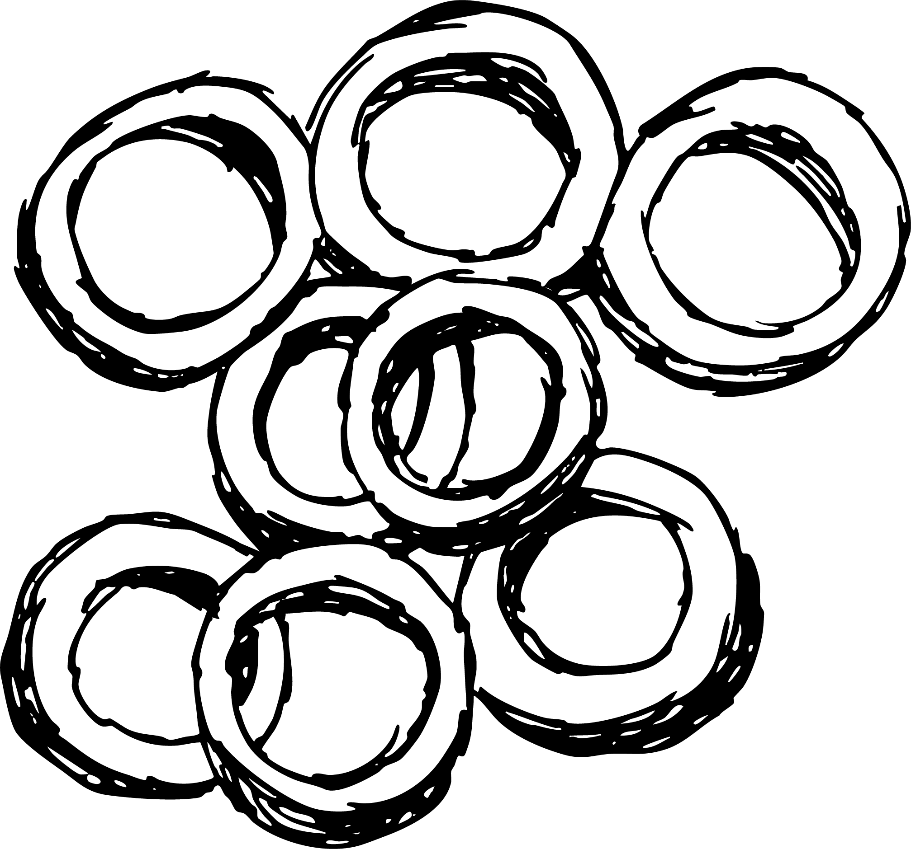

Anelli

Category
Soup Pasta
Region
Sicilia
Anelli are small, thin, ring-shaped pasta made from durum wheat semolina. Each piece resembles a tiny circle or “O” shape, and their name translates to “rings.” Anelli are commonly used in soups, but often also in salads and baked pasta dishes. They are ideal for soups because they absorb the flavors of the broth and contribute to a satisfying texture.
Wondering what dish
you can make with this pasta shape?
Click the slideshow to discover a delicious recipe using Anelli →